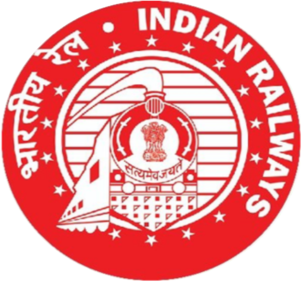

The objective of REMMLOT analysis at Jheel Siding Coaching Depot is to systematically monitor and analyse fault codes generated in coaches, identify recurring faults and their probable causes, track fault trends, and assess equipment performance. The analysis helps in planning preventive maintenance, reducing repetitive failures, improving coach reliability and availability, and ensuring safe and comfortable passenger journeys.